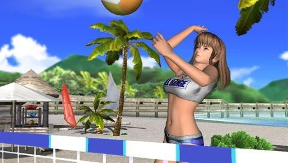
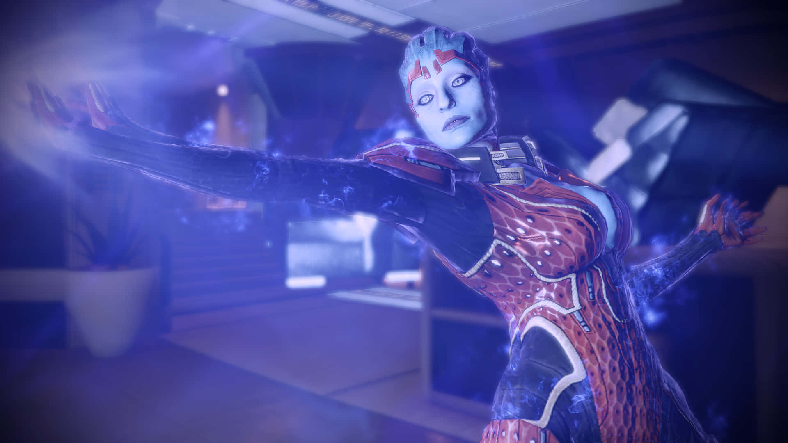
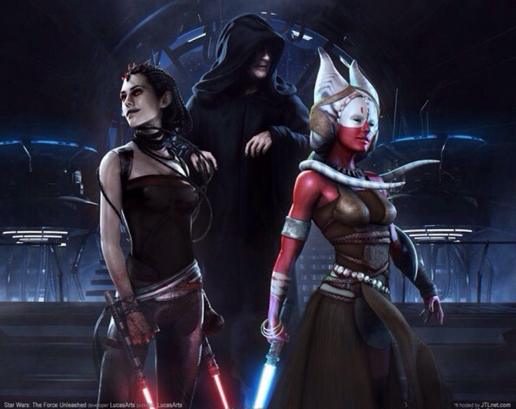
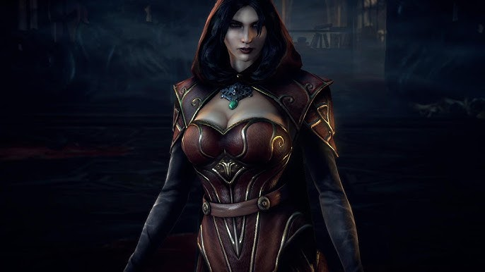
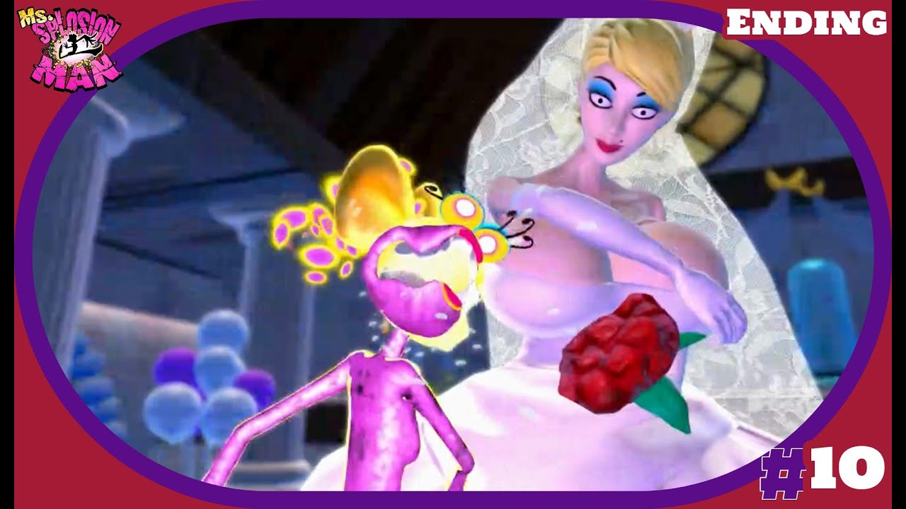
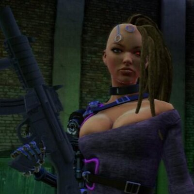
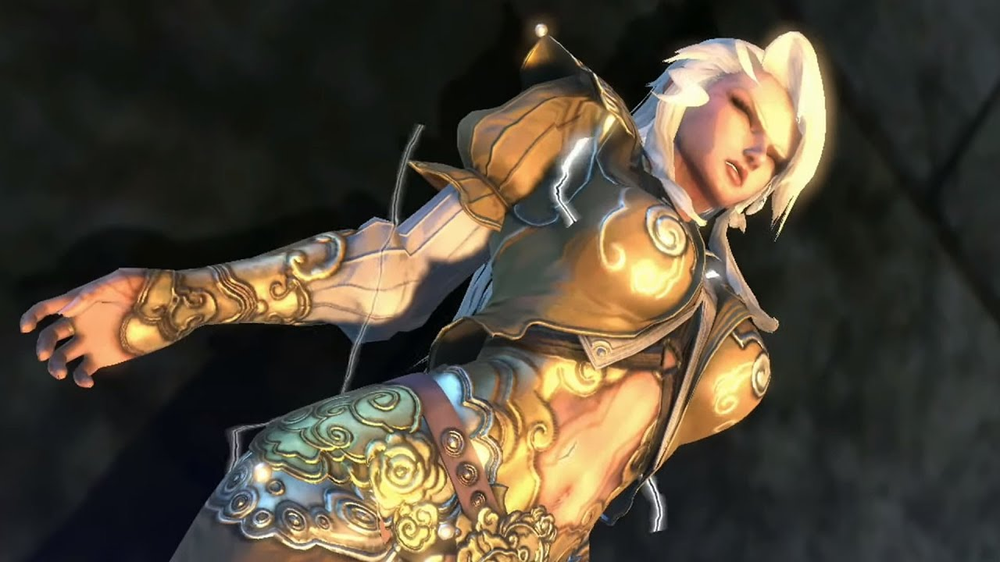
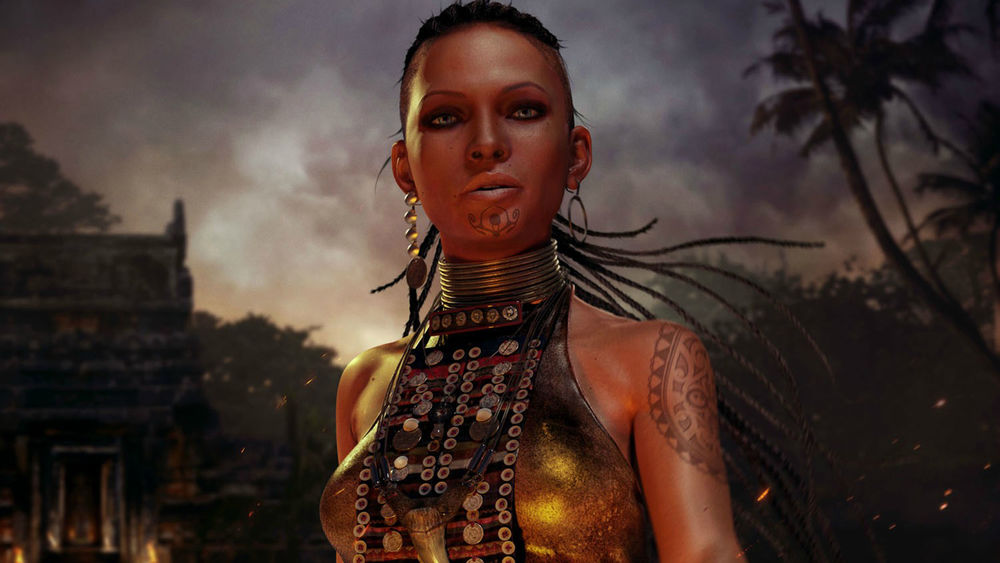
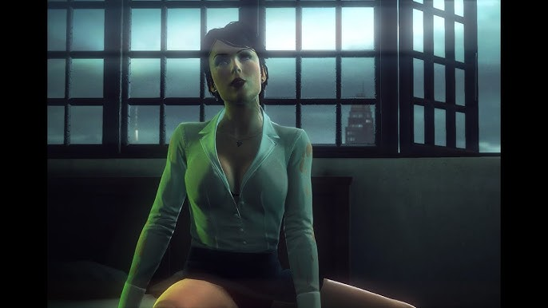

Dead or Alive Paradise (2010)
Modalità beach volley con personaggi femminili non giocabili.

Mass Effect 2 (2010) - Samara
Guerriera asari dal codice morale rigido e potente biotica.

Red Steel 2 (2010) - Tamiko
Supporto femminile con background narrativo rilevante.

Star Wars: The Force Unleashed (2010)
Maris Brood e Shaak Ti come figure femminili della Forza.

Castlevania: Lords of Shadow (2010) - Carmilla
Antagonista vampiresca in uno scenario gotico e drammatico.

Ms. Splosion Man (2011) - Bride
Una figura caricaturale e umoristica, celebrando la follia rosa.

Saints Row: The Third (2011) - Shaundi
Personaggio ricorrente, carismatica e letale, parte del team.

Asura’s Wrath (2012) - Olga
Presenza femminile in un contesto mitologico iper-stilizzato.

Far Cry 3 (2012) - Citra
Guida spirituale ambigua, carismatica e manipolatrice.

Hitman: Absolution (2012) - Layla
Personaggio minore dal design provocatorio e letale.
